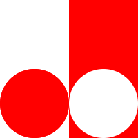
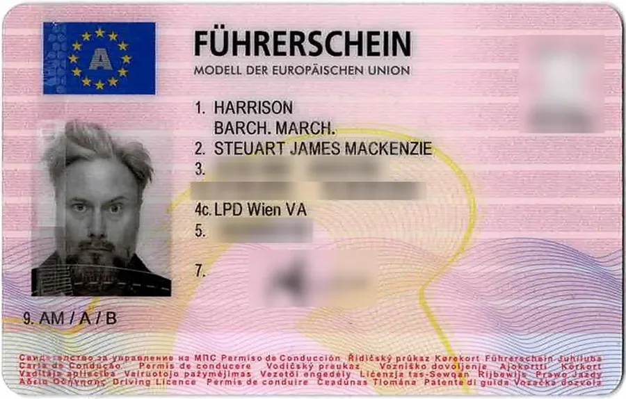
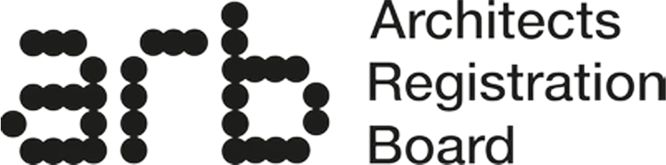
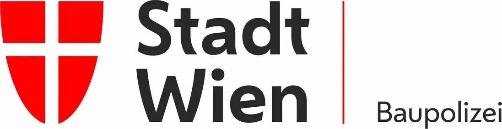
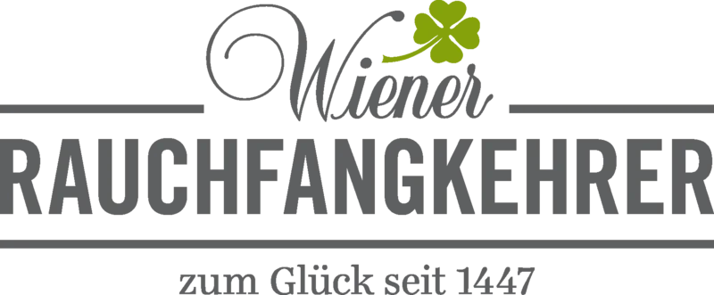
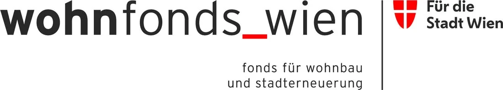
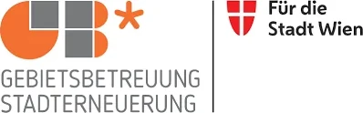
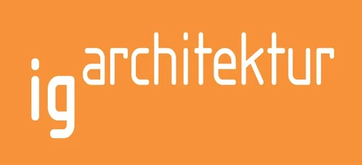
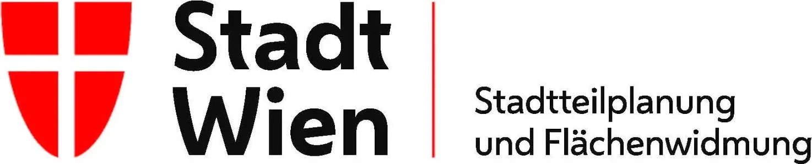

» ArchitektInhaber
Cuong
TRAN-VIET
BArch DipArch
Staatsbürgerschaft: Österreich [EU]
Sprachen: Deutsch & Vietnamesisch [Muttersprache], English [verhandlungssicher]

dasein-designPARTNERSHIP
dasein-design [architecture+design] [Wien]
» Jan.’03 – bis dato
dasein-design is a small architecture and design practice in Vienna, run as a partnership since 2003. We design homes, courtyards and interiors – and the furniture, exhibitions and graphics that go with them. We listen first, keep things simple and build for the people who will live with the result.
Both partners studied at the Mackintosh School of Architecture in Glasgow and are registered architects in Austria (Ziviltechniker) and in the United Kingdom (ARB). Between them they have worked for practices in Vienna, London and Glasgow on everything from small conversions to large city buildings.
Cuong Tran-Viet also studied at TU Wien and at the Bartlett in London, spent ten years with Aedas in London and nine with BEHF Architects in Vienna. Steuart Harrison taught design for fifteen years at TU Wien and for several years at New Design University St. Pölten.
We work in German and English. The partners run every project themselves, from the first sketch to the last detail on site – for private clients, small businesses, communities and cultural institutions.
» ArchitektInhaber
BArch DipArch
Staatsbürgerschaft: Österreich [EU]
Sprachen: Deutsch & Vietnamesisch [Muttersprache], English [verhandlungssicher]

» Architect
BArch MArch ARB
Staatsbürgerschaft: Schottland [Europäisch!]
Sprachen: Englisch [Muttersprache], Deutsch [B2]
CV
» ArchitektInhaber
CV
» Architect
OUR SERVICES
» Experte: Archicad
» gute Kenntnisse: AutoCAD, Microstation V8 & Triforma, 3d Studio MAX+VRAY, Adobe Paket, Microsoft Office Paket, FormZ, Bentley Generative Components, Solibri Modelchecker, Vectorworks.
» Grundkenntnisse: Autodesk Revit, Rhinoceros, SidounWinAVA, NBS Building.
» Vorentwurf bis Ausführungsplanung, Möbeldesign, örtl. Bauaufsicht für diverse Projekte, darunter eine Hotel Pension, Kleingartenhäuser, Wohnungen, Klavierübungsstudio, Büro, Ausstellungen, Ateliers / Café-Bar & Einfamilienhäuser hauptsächlich in Wien.
» Vorentwurf bis Ausführungsplanung, Möbeldesign, örtl. Bauaufsicht für diverse Projekte, darunter eine Hotel Pension, Kleingartenhäuser, Wohnungen, Klavierübungsstudio, Büro, Ausstellungen, Ateliers / Café-Bar & Einfamilienhäuser hauptsächlich in Wien.
INFORMATION FOR CLIENTS
Building is a big step, and it helps to know what to expect. These short guides explain why it pays to work with an architect, how a project runs from first idea to finished building, what it costs and who takes part along the way. Have a look – then simply get in touch.
LINKS FOR CLIENTS
Useful addresses for anyone planning to build in Vienna or Austria: the chambers that register architects, the city offices for permits and building rules, and good places to see and learn more about architecture.

arbArchitects Registration Board of the United Kingdom [UK]
MA 37 – BaupolizeiBaubehörde der Stadt Wien [W]
RauchfangkehrerWiener Rauchfangkehrer [Ö]Az WArchitekturzentrum Wien [Ö]next roomVerein für Architektur, Wien [Ö]
wohnfonds_wienFonds für Wohnbau und Stadterneuerung [Ö]OIBÖsterreichisches Institut für Bautechnik [Ö]Austrian StandardsÖsterreichische Organisation für Standardisierung und Innovation [Ö]ÖGFAÖsterreichische Gesellschaft für Architektur [Ö]
GB* GebietsbetreuungenService-Einrichtung der Stadt Wien [Ö]KleingärtnerZentralverband der Kleingärtner und Siedler Österreichs [Ö]BundesdenkmalamtBundesdenkmalamt Österreich [Ö]
IG ArchitekturInteressensgemeinschaft der Architekturschaffenden [Ö]
MA 21 A/BStadtteilplanung und Flächenwidmung, Wien [W]OFFICE
dasein-design · Neulerchenfelderstrasse 42/6
A-1160 Wien · Austria · EU
Cuong TRAN-VIET
+43 (0)676 4822 464 · cuong@dasein-design.net
Steuart J Mackenzie HARRISON
+43 (0)699 1941 9240 · steuart@dasein-design.net
–Write, call or come visit us!
We’d be happy to discuss your project, large or small.–
IMPRESSUM
Informationen gemäß § 5 E-Commerce-Gesetz und Offenlegung gemäß § 25 Mediengesetz
Arch. DI Cuong TRAN-VIET
Architekt (Ziviltechniker) · Inhaber von dasein-design
Neulerchenfelderstrasse 42/6 · A-1160 Wien · Österreich
T +43 (0)676 4822 464 · E cuong@dasein-design.net
Architektur, Planung und Design
Architekt (Ziviltechniker), Berufsbezeichnung verliehen in Österreich.
Mitglied der Kammer der Ziviltechniker:innen für Wien, Niederösterreich und Burgenland (ZT Kammer Ost), Karlsgasse 9, 1040 Wien · ost.zt.at
Ziviltechnikergesetz 2019 (ZTG 2019) und Standesregeln der Ziviltechniker:innen, abrufbar unter www.ris.bka.gv.at und ost.zt.at
[zuständiges Bundesministerium – bitte bestätigen]
[ATU – bitte ergänzen]
Steuart J Mackenzie HARRISON BArch MArch ARB
Architect
Mitarbeit · Gestaltung dieser Website
Die Inhalte dieser Website wurden mit Sorgfalt erstellt; für Richtigkeit, Vollständigkeit und Aktualität wird keine Gewähr übernommen. Für die Inhalte verlinkter Websites sind ausschließlich deren Betreiber verantwortlich. Texte, Bilder und Pläne sind urheberrechtlich geschützt; jede Verwendung bedarf der vorherigen Zustimmung.
Diese Website setzt keine Cookies und erhebt keine personenbezogenen Daten. Die Karte wird von OpenStreetMap geladen. [Datenschutzerklärung – bitte ergänzen]
© 2026 [ dasein-design & steux ]